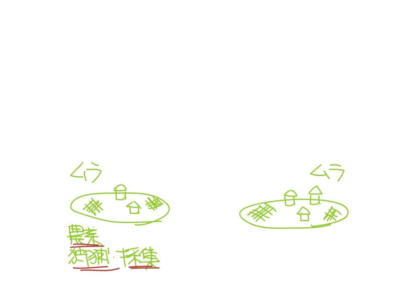
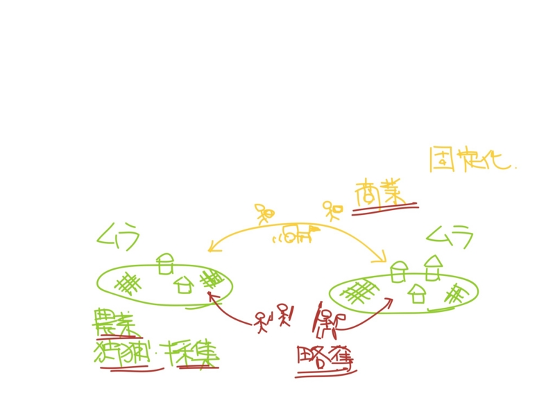
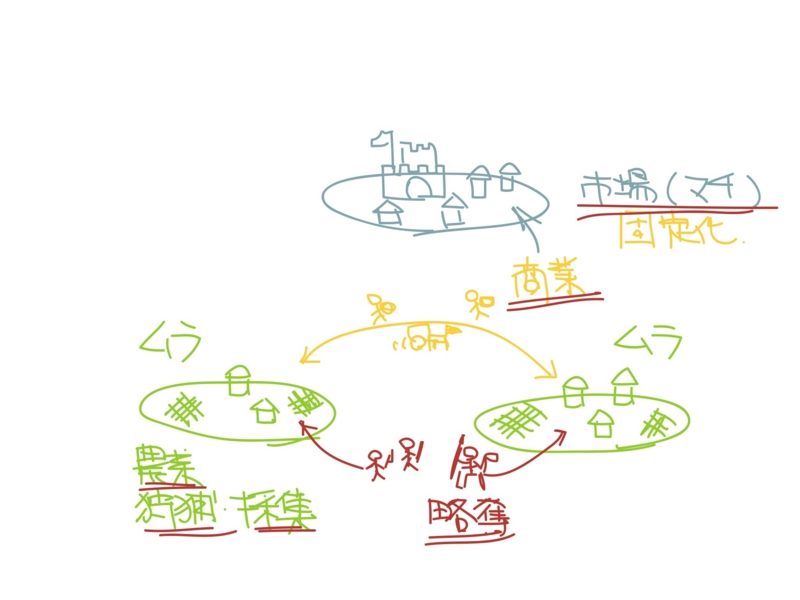
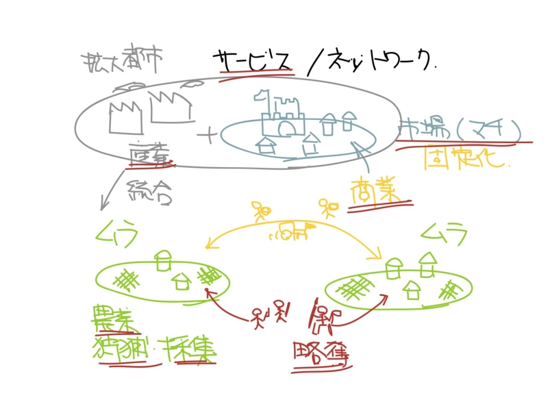

「マチ」と「ムラ」
公開日：

孤立した個人が少しの制約と引換に、より多くの自由を求めて共同生活をはじめる。これが「ムラ」だ。「ムラ」では狩猟・採集、農業（第一次産業）が営まれている。「ムラ」の語源は、おそらく「群れ（ムレ）」だろう。移動する「ムラ」が「群れ」で、定住した「群れ」が「ムラ」なのだと思う。
「ムラ」はルール（規範）によって閉じている。ゆえに相互贈与が外に漏れ出さず、豊かさ（≒可能性）を積み上げていくことができる。

「ムラ」と「ムラ」は、商業と略奪*1によって結ばれている。この二つは表裏一体であるらしいが、ここでは表の顔である「商業」のみを扱う。「略奪」方面に興味があれば、本書が面白いと思う。
")
- 作者: エリック・ホブズボーム,船山榮一
- 出版社/メーカー: 筑摩書房
- 発売日: 2011/01/08
- メディア: 文庫
- 購入: 2人 クリック: 352回
- この商品を含むブログ (14件) を見る

古来、商業は「商（行商）」と「賈（店売り）」にわかたれるが、その違いは"固定性"にある。とくに「賈」は市を成し、「マチ」を形成する。やがて「マチ」は、「ムラ」を支配する。「ムラ」の内部にも権力ピラミッドが存在するが、「マチ」はさらにそれを束ねるモノになる。「マチ」では「ムラ」と「ムラ」の相互交換、「マチ」と「マチ」の相互交換が行われる。相互交換は、相互贈与を結びつけ・解体し、より大きな豊かさ（≒可能性）を実現していく。
「マチ」は「ムラ」と「ムラ」を水平に結びつけるものでありながら、それを垂直方向に支配する存在でもある。ここに「マチ」の二重性がある。

産業革命を経ると、「マチ」は産業（第二次産業）をも抱え込むようになる*2。やがて、「マチ」はサービスとネットワーク（第三次産業）も手にし、「ムラ」という「ムラ」、そして「マチ」を飲み込んでいく。これは“拡大された都市”とでも呼ぶべきもので、飲み込んだ「マチ」や「ムラ」を平坦に、そして外の「マチ」や「ムラ」に対しては支配的に振舞う。
現代の都市には、「マチ」と「ムラ」が混在している。しかし、支配しているのは「マチ」の倫理で、「ムラ」の部分がそれに抵抗しているようにも見られる。よく観察すると、それはとても興味深い。いつも行くお店は、「ムラ」的？ 「マチ」的？ あなたは解放的だけれど薄っぺらい「マチ」的人間？ それとも心を開きにくいけれど情を重んじる「ムラ」的人間？ たぶんどの部分もそれなりにもっているのだろうけれど、自分がどちらかというとどちらであるか、考えてみるのもいいのではないかと思う。